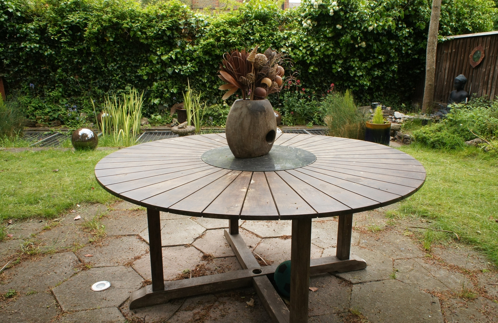
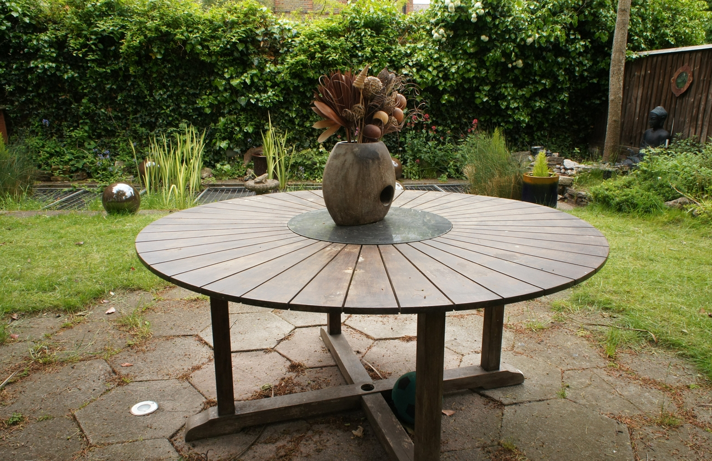

Results
Result comparison
Here, we respectively compared the NVS results of 3DGS, CA-GS(Ours) and Ground Truth.
Occlusion between Gaussian distributions
We trained the flowers scene using 3DGS and its default parameters, and at 2000 and 7000 steps, we recorded and displayed the number of completely occluded Gaussian distributions at the current viewpoint, that is, the Gaussian distributions located on the alpha blending path but not participating in image rendering and still accumulating the zero position gradient. The brighter the image color here, the greater the number of completely occluded Gaussian distributions.
Point Clouds
Here, we present the comparison among the point cloud results produced by different methods, our point cloud distribution can better restore the geometric structure.

 
